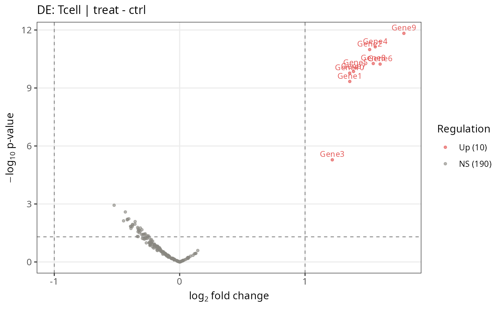

Produces a volcano plot from a FDEResult object, with
genes coloured by significance and optionally labelled. Points are
coloured by whether they exceed the lfc_thresh and
fdr_thresh thresholds.
plotDEResults(
result,
fdr_thresh = 0.05,
lfc_thresh = 1,
top_n = 10L,
point_size = 1,
point_alpha = 0.6,
colours = c(up = "#E24B4A", down = "#378ADD", ns = "#888780")
)A numeric(1) FDR threshold for significance.
Default: 0.05.
A numeric(1) absolute log2 fold-change
threshold. Default: 1.
An integer(1) number of top significant genes to
label by name. Default: 10.
A numeric(1) point size. Default: 1.
A numeric(1) point transparency. Default:
0.6.
A named character vector of colours for
"up", "down", and "ns" (not significant).
Default: c(up = "#E24B4A", down = "#378ADD", ns = "#888780").
A ggplot2 object.
library(SingleCellExperiment)
set.seed(42)
n_genes <- 200
counts <- matrix(rpois(n_genes * 60, 8), nrow = n_genes, ncol = 60)
rownames(counts) <- paste0("Gene", seq_len(n_genes))
colnames(counts) <- paste0("Cell", seq_len(60))
counts[1:10, 31:60] <- counts[1:10, 31:60] * 3L
sce <- SingleCellExperiment(assays = list(counts = counts))
sce$donor <- rep(paste0("D", 1:6), each = 10)
sce$cell_type <- "Tcell"
sce$condition <- rep(c("ctrl", "treat"), each = 30)
result <- fastDE(sce, donor = "donor", cell_type = "cell_type",
condition = "condition", target_type = "Tcell",
min_cells = 5)
#> No sparse donor-cell type combinations found at min_cells = 5.
#> Detected unpaired design (each donor in one condition).
#> Testing 200 / 200 genes after expression filter.
#> voomLmFit is now recommended over voom
plotDEResults(result)
